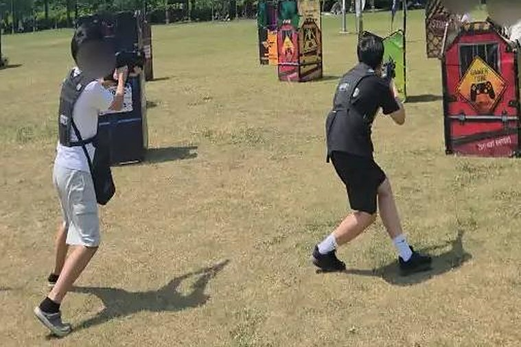

기업 체육대회
운동장이나 체육관에서 팀 대항 경기와 레크리에이션을 묶어 하루 일정으로 운영합니다. 음향, 텐트, 경기 용품, 진행 인력까지 메이커팀이 준비합니다.
- 잘 맞는 행사
- 창립기념 체육대회, 사내 한마당, 가족 초청 행사
- 운영 방식
- 팀 대항 경기와 참여형 게임을 섞어 구성
- 우천 시 실내 대체 장소나 텐트 운영안 함께 준비
- 음향·본부석·시상까지 한 번에 진행
운동장이나 체육관에서 팀 대항 경기와 레크리에이션을 묶어 하루 일정으로 운영합니다. 음향, 텐트, 경기 용품, 진행 인력까지 메이커팀이 준비합니다.

적외선 레이저 건과 센서 조끼로 하는 팀 전략 게임입니다. 점수가 실시간으로 집계돼 팀 대항전으로 운영하기 좋습니다.
필요한 것만 골라 맡기셔도 됩니다.
준비 방법은 기업 체육대회·팀빌딩 준비 가이드에서 볼 수 있습니다.